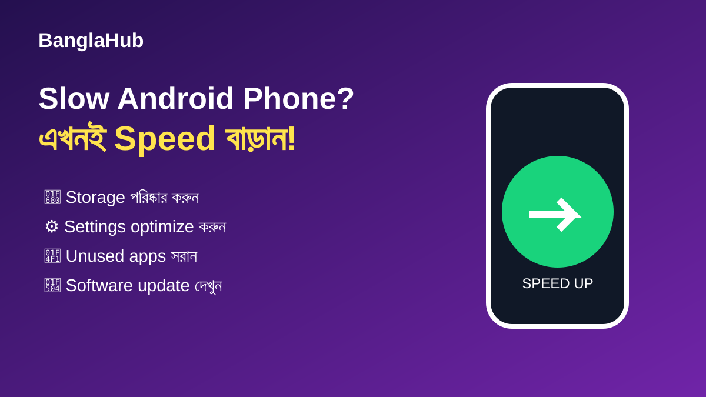

Android ফোন Slow হলে Speed বাড়ানোর ১০টি উপায়
ফোন ধীর হওয়ার পেছনে একাধিক কারণ থাকতে পারে। আগে সহজ এবং নিরাপদ maintenance steps চেষ্টা করুন, তারপর প্রয়োজন হলে আরও advanced ব্যবস্থা নিন।

১. Storage খালি করুন
অপ্রয়োজনীয় video, download ও unused app সরিয়ে পর্যাপ্ত free space রাখুন।
২. Background app কমান
যেসব app নিয়মিত ব্যবহার করেন না সেগুলোর background activity সীমিত করুন।
৩. Software ও app update করুন
বিশ্বস্ত source থেকে system এবং app update নিন। অনেক update bug fix ও performance improvement আনতে পারে।
৪. ফোন restart করুন
দীর্ঘদিন restart না করলে temporary processes জমতে পারে। প্রয়োজন অনুযায়ী restart করা সহজ maintenance step।
৫. ভারী app-এর বিকল্প দেখুন
কম ব্যবহৃত heavy app-এর পরিবর্তে lightweight web version বা প্রয়োজনীয় app ব্যবহার করতে পারেন।
৬–১০: আরও পাঁচটি পরীক্ষা
অতিরিক্ত widget কমান, অপ্রয়োজনীয় animation কমাতে পারেন, problematic app uninstall করে দেখুন, battery overheating হচ্ছে কি না লক্ষ্য করুন এবং backup নিয়ে প্রয়োজন হলে factory reset বিবেচনা করুন। Reset-এর আগে অবশ্যই গুরুত্বপূর্ণ data backup নিন।
FAQ
Factory reset কি প্রথম সমাধান?
না। আগে storage, apps, updates ও background activity পরীক্ষা করা ভালো।
RAM cleaner app ব্যবহার করা দরকার?
সাধারণত Android নিজেই memory management করে। অজানা cleaner app ইনস্টল না করাই নিরাপদ।
আরও পড়ুন: Battery দ্রুত শেষ হওয়ার কারণ · Android ফোন কেনার আগে যা দেখবেন